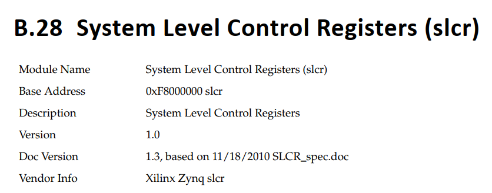
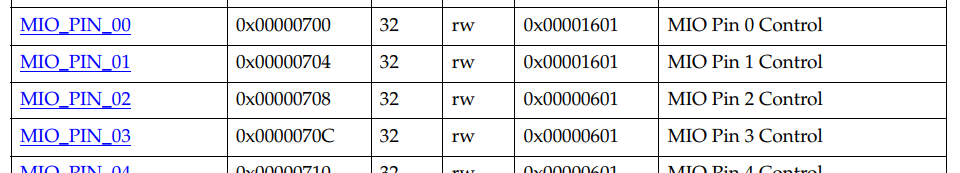
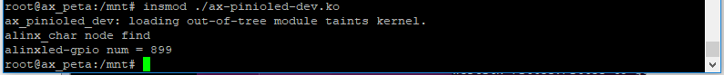
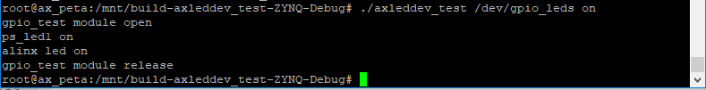

pinctrl和gpio子系统#
在前面的实验中，我们操作设备都是直接操作寄存器的。虽然上一章使用了设备树，但也只是把寄存器信息放到设备树中，本质上都是一样的。直接操作寄存器来控制硬件资源对于编码的人来说很方便，然而对于阅读代码的人来说想必是很崩溃的。而且在设备树中写入大量的寄存器地址，不仅不易于阅读，在使用时也很容易出错。比如上一章中，仅是控制led就用了4个寄存器，而且寄存器地址在设备树中的顺序也没有规则，全是自定的，在驱动程序中读取地址也无法对应和确认，最终我们在设置寄存器时就很容易错位。
pinctrl子系统来可以应对这个问题，同时针对我们实验中用到的led也就是gpio操作来说还需要结合gpio子系统。
pinctrl子系统#
Linux内核提供pinctrl子系统来统一芯片厂商的pin脚管理方法，他会帮我们完成以下工作：
从设备树中获取pin脚信息；
设置pin脚的复用功能；
配置pin脚的电器特性。
使用pinctrl子系统，只需要在设备树中配置好相关节点信息，剩余的工作全由pinctrl子系统完成，我们只要做甩手掌柜就行了。
zynq平台pinctrl子系统的设备树节点和属性#
不同的芯片pin脚配置方法有差别，相应的芯片厂家的pinctrl子系统实现也会有差别，但我们需要关心的仍然只有设备树的写法。直接来看一段示例：
pinctrl0: pinctrl@700 {
compatible = "xlnx,pinctrl-zynq";
reg = <0x700 0x200>;
syscon = <&slcr>;
pinctrl_uart1_default: uart1-default {
mux {
groups = "uart1_10_grp";
function = "uart1";
};
conf {
groups = "uart1_10_grp";
slew-rate = <0>;
io-standard = <1>;
};
conf-rx {
pins = "MIO49";
bias-high-impedance;
};
conf-tx {
pins = "MIO48";
bias-disable;
};
};
};
第1行的pinctrl0: pinctrl@700节点，就是ZYNQ中pinctrl子系统的节点。pinctrl0的父节点为slcr@f8000000，700是相对f8000000的偏移，也就说pin的寄存器起始地址为0xf8000700。可以在数据手册中找到对应的寄存器说明，如下图：
 不过寄存相关的内容不是这里我们需要关系的对象，示例的2、3、4行是pinctrl0的三个属性，都是xilinx设置好的，也不用去关心。重点是第5行开始，在pinctrl0节点中添加的子设备节点uart1-default，我们要通过学习这个子设备节点的配置方法，添加我们自己需要的设备节点。这个节点下面没有属性，而是有4个子节点：mux、conf、conf-rx、conf-tx。其中mux是配置pin脚的复用功能，其他三个是配置pin脚的电气特性，conf中设置通用的特性，conf-rx中设置输入引脚和相关特性，conf-tx中设置输出引脚和相关特性。
mux节点中，有两个必要属性：
groups：选择这个复用功能的pin脚分组列表。可选的值有：
ethernet0_0_grp, ethernet1_0_grp, mdio0_0_grp, mdio1_0_grp, qspi0_0_grp, qspi1_0_grp, qspi_fbclk, qspi_cs1_grp, spi0_0_grp - spi0_2_grp, spi0_X_ssY (X=0..2, Y=0..2), spi1_0_grp - spi1_3_grp, spi1_X_ssY (X=0..3, Y=0..2), sdio0_0_grp - sdio0_2_grp, sdio1_0_grp - sdio1_3_grp, sdio0_emio_wp, sdio0_emio_cd, sdio1_emio_wp, sdio1_emio_cd, smc0_nor, smc0_nor_cs1_grp, smc0_nor_addr25_grp, smc0_nand, can0_0_grp - can0_10_grp, can1_0_grp - can1_11_grp, uart0_0_grp - uart0_10_grp, uart1_0_grp - uart1_11_grp, i2c0_0_grp - i2c0_10_grp, i2c1_0_grp - i2c1_10_grp, ttc0_0_grp - ttc0_2_grp, ttc1_0_grp - ttc1_2_grp, swdt0_0_grp - swdt0_4_grp, gpio0_0_grp - gpio0_53_grp, usb0_0_grp, usb1_0_grp。
这些分组包含哪些pin脚，可以在drivers/pinctrl/pinctrl-zynq.c文件中找到相应的数组，比如示例中的group”uart1_10_grp”，对应的数组为static const unsigned int uart1_10_pins[] = {48, 49}，这个group包含的pin脚即为pin48和pin49。
function：选择pin脚分组的复用功能。可选的值有：
ethernet0, ethernet1, mdio0, mdio1, qspi0, qspi1, qspi_fbclk, qspi_cs1, spi0, spi0_ss, spi1, spi1_ss, sdio0, sdio0_pc, sdio0_cd, sdio0_wp, sdio1, sdio1_pc, sdio1_cd, sdio1_wp, smc0_nor, smc0_nor_cs1, smc0_nor_addr25, smc0_nand, can0, can1, uart0, uart1, i2c0, i2c1, ttc0, ttc1, swdt0, gpio0, usb0, usb1。
示例中的设备节点名为uart1-default，用作uart1，所以function的值是uart1。
需要什么功能，可以用什么引脚，可以从数据手册中查看，也可以直接在drivers/pinctrl/pinctrl-zynq.c文件中查看，很容易看出对应关系。
conf节点可以分为多组，因为相同复用功能的pin组里每个pin的电器特性可能会不同，比如示例中的uart1，有一个pin脚用作输出不需要设置偏置，另一个用做输入需要设置成高阻。conf节点的名字必须要包含”conf”这个关键词，其他的关键词仅用于区分分组含义，比如示例中的conf-rx是指这个conf节点适用于配置输入pin脚的，命名为conf-in也是同样的效果，甚至把示例中rx和tx交换，对使用也没用影响，仅用于含以上的区分。
conf节点的必要属性为pin和group二选一。设置pin组时使用属性group，如示例中第10行的conf节点，设置单个pin或多个不在一个group中的pin时使用属性pin，如15行的conf-rx和19行的conf-tx。
group属性设上面mux节点中的一样。
pin：使用这个conf的pin脚列表。可选的值为：MIO0 ~ MIO53。
conf节点还有一些可选属性：
io-standard：设置io电平标准，可选值为：
1: LVCMOS18
2: LVCMOS25
3: LVCMOS33
4: HSTL
bias-disable、bias-high-impedance、bias-pull-up：设置pin脚偏置，不需要赋值，只需要在对应的conf节点中包含需要的偏置属性即可。
slew-rate：设置转换速率，等于0时为slow，等于1时为fast。
low-power-disable、low-power-enable：使能低功耗模式，在对应的conf节点中包含需要的偏置属性即可。
还有其他的可选属性不就一一介绍了，可以在内核源码目录Documentation/devicetree/bindings/pinctrl/pinctrl-binding.txt文件中，搜索”== Generic pin configuration node content ==”词条查看。
pinctrl子系统的使用#
在pinctrl节点中添加了设备子节点后，系统还不回去初始化这个设备，我们需要在客户设备(client device)节点中去调用他。举个例子：
device {
pinctrl-names = "active", "idle";
pinctrl-0 = <&state_0_node_a>;
pinctrl-1 = <&state_1_node_a &state_1_node_b>;
};
device是客户设备节点，是调用pinctrl的设备。
pinctrl-0是必选属性，是这个设备对应pin的pinctrl节点应用列表，如果这个设备对应了多个pin，那就增加属性pinctrl-0~n，如果一个pin对应了多个pinctrl，就如第4行的pinctrl-1属性一般附上多个pinctrl节点。
pinctrl-names是下面pinctrl0~n的名称列表，命名是自定的但要尽量易读并贴合实际。
gpio子系统#
pinctrl子系统中，如果把功能配置成gpio的话，就需要用到gpio子系统了。gpio子系统帮我们实现了gpio初始化，并提供了一些接口函数给我们操作gpio。我们要做的同样只是在设备树中配置好信息，然后了解一下接口函数的用法即可。
设备树中的gpio#
在Documentation/devicetree/bindings/gpio/gpio-zynq.txt文件中，介绍了zynq系列芯片gpio在设备数中的描述方式，我们在现有的zynq设备数中，也能找到gpio的默认配置，如下：
gpio0:gpio@e000a000 {
#gpio-cells = <2>;
compatible = "xlnx,zynq-gpio-1.0";
clocks = <&clkc 42>;
gpio-controller;
interrupt-parent = <&intc>;
interrupts = <0 20 4>;
interrupt-controller;
#interrupt-cells = <2>;
reg = <0xe000a000 0x1000>;
};
这些属性都是必要属性。
interrupt-parent、interrupts、interrupt-controller、#interrupt-cells：这四个属性是中断相关的，等之后讲中断的时候再说。
clocks属性时时钟设置相关，暂时使用默认配置即可。
#gpio-cells：指代引用这个gpio节点时需要两个cell，他的值必须是2，即引用节点时需要有两个cell，第一个cell为gpio编号，第二个cell用于指顶可选参数，第二个cell在zynq中没有用到填0即可。举个例子：alinxled-gpios = <&gpio0 0 0>;，即客户设备的使用的gpio0_mio0这个io。
compatible：兼容新，必须为”xlnx, zynq-gpio-1.0”或”xlnx, zynqmp-gpio-1.0”。
gpio-controller：指定该节点为gpio控制器。
reg：这组gpio的寄存器首地址和范围。
这里我们不需要修改什么，保持现有配置即可。
gpio接口函数#
gpio子系统提供接口函数来代替我们直接对寄存器的操作把驱动程序再次分离分层。这节我们介绍一些常用的gpio接口函数。
of函数扩展
在介绍gpio接口函数之前，先扩展一个gpio相关的of函数of_get_named_gpio，用于通过设备树中节点属性如”gpios = <&gpio0 0 0 &gpio0 1 0>;”获取gpio编号，函数原型如下：
int of_get_named_gpio(struct device_node *np, const char *propname, int index); |
参数说明：
np：设备节点。
propname：属性名称，从这个属性中获取gpio编号。
index：需要获取的gpio下标。
返回值：gpio编号；返回负值则获取失败。
gpio_request()
在使用gpio做其他操作之前，需要先用gpio_request()函数申请一个io。至今为止接触到的Linux内核提供的接口，都是这种面向对象的思想，先声明一个对象，再操作这个对象。
函数原型：
int gpio_request(unsigned int gpio, const char *label); |
参数说明：
gpio：需要申请的gpio标号，通过上面介绍的of_get_named_gpio函数获取。
label：申请到的gpio的标签。
返回值：0表示成功，其他表示失败。
gpio_free()
释放gpio，与gpio_request()相对，原型：
void gpio_free(unsigned int gpio); |
gpio：需要释放的gpio标号。
gpio_direction_input()
设置gpio为输入，函数原型：
int gpio_direction_input(unsigned gpio); |
gpio：需要设置的gpio标号。
返回值：0表示成功，负值表示失败。
gpio_direction_output()
设置gpio为输出，函数原型：
int gpio_direction_output(unsigned gpio, int value); |
gpio：需要设置的gpio标号。
value：输出的默认电平。
返回值：0表示成功，负值表示失败。
gpio_get_value()
读取gpio的电平，原型：
int __gpio_get_value(unsigned gpio); |
gpio：需要读取的gpio标号。
返回值：读取到的电平，负值表示失败。
gpio_set_value()
设置gpio的电平，原型：
void __gpio_set_value(unsigned gpio, int value); |
gpio：需要操作的gpio标号。
value：需要写入的电平。
实验#
必要的知识都了解了，接下来通过实验来验证。仍然使用led来测试。
原理图#
和字符设备那一章节的内容相同。
设备树#
打开文件”system-conf.dtsi”，在根节点下添加以下节点内容：
amba {
gpio@e000a000 {
compatible = "xlnx,zynq-gpio-1.0";
#gpio-cells = <0x2>;
clocks = <0x1 0x2a>;
gpio-controller;
interrupt-controller;
#interrupt-cells = <0x2>;
interrupt-parent = <0x4>;
interrupts = <0x0 0x14 0x4>;
reg = <0xe000a000 0x1000>;
};
slcr@f8000000 {
pinctrl@700 {
pinctrl_led_default: led-default {
mux {
groups = "gpio0_0_grp";
function = "gpio0";
};
conf {
pins = "MIO0";
io-standard = <1>;
bias-disable;
slew-rate = <0>;
};
};
};
};
};
alinxled {
compatible = "alinx-led";
pinctrl-names = "default";
pinctrl-0 = <&pinctrl_led_default>;
alinxled-gpios = <&gpio0 0 0>;
};
第2~12行是gpio节点，这个内容其实是zynq设备树中已有的，之前已经讲过了。
第16~28行我们新增的pin设备节点，用于配置led用到的pin脚。led链接的io是MIO0，所在分组为”gpio0_0_grp”，功能就是gpio0。因为只有一个引脚，所以只要一个conf节点就行了，转换率设置为slow，电平标准为1.8，偏置失能，配置目标为”MIO0”。
第33行则是我们的led设备节点，对于gpio子系统和pinctrl子系统来说，就是客户设备(client device)，通过属性pinctrl-0 = <&pinctrl_led_default>调用pin节点，通过属性alinxled-gpios = <&gpio0 0 0>来绑定gpio。这个属性的名字alinxled-gpios需要记号，稍后我们要通过这个名字来获取gpio标号。
驱动代码#
使用petalinux新建名为”ax-pinioled-drv”的驱动程序，并执行petalinux-config -c rootfs命令选上新增的驱动程序。
在ax- pinioled -drv.c文件中输入下面的代码：
#include <linux/module.h>
#include <linux/kernel.h>
#include <linux/fs.h>
#include <linux/init.h>
#include <linux/ide.h>
#include <linux/types.h>
#include <linux/errno.h>
#include <linux/cdev.h>
#include <linux/of.h>
#include <linux/of_address.h>
#include <linux/of_gpio.h>
#include <linux/device.h>
#include <linux/delay.h>
#include <linux/init.h>
#include <linux/gpio.h>
#include <asm/uaccess.h>
#include <asm/mach/map.h>
#include <asm/io.h>
/* 设备节点名称 */
#define DEVICE_NAME "gpio_leds"
/* 设备号个数 */
#define DEVID_COUNT 1
/* 驱动个数 */
#define DRIVE_COUNT 1
/* 主设备号 */
#define MAJOR1
/* 次设备号 */
#define MINOR1 0
/* LED 点亮时输入的值 */
#define ALINX_LED_ON 1
/* LED 熄灭时输入的值 */
#define ALINX_LED_OFF 0
/* 把驱动代码中会用到的数据打包进设备结构体 */
struct alinx_char_dev{
dev_t devid; //设备号
struct cdev cdev; //字符设备
struct class *class; //类
struct device *device; //设备
struct device_node *nd; //设备树的设备节点
int alinx_led_gpio; //gpio 号
};
/* 声明设备结构体 */
static struct alinx_char_dev alinx_char = {
.cdev = {
.owner = THIS_MODULE,
},
};
/* open 函数实现, 对应到 Linux 系统调用函数的 open 函数 */
static int gpio_leds_open(struct inode *inode_p, struct file *file_p)
{
/* 设置私有数据 */
file_p->private_data = &alinx_char;
printk("gpio_test module open\n");
return 0;
}
/* write 函数实现, 对应到 Linux 系统调用函数的 write 函数 */
static ssize_t gpio_leds_write(struct file *file_p, const char __user *buf, size_t len, loff_t *loff_t_p)
{
int retvalue;
unsigned char databuf[1];
/* 获取私有数据 */
struct alinx_char_dev *dev = file_p->private_data;
retvalue = copy_from_user(databuf, buf, len);
if(retvalue < 0)
{
printk("alinx led write failed\r\n");
return -EFAULT;
}
if(databuf[0] == ALINX_LED_ON)
{
gpio_set_value(&alinx_char.alinx_led_gpio, !!0);
}
else if(databuf[0] == ALINX_LED_OFF)
{
gpio_set_value(&alinx_char.alinx_led_gpio, !!1);
}
else
{
printk("gpio_test para err\n");
}
return 0;
}
/* release 函数实现, 对应到 Linux 系统调用函数的 close 函数 */
static int gpio_leds_release(struct inode *inode_p, struct file *file_p)
{
printk("gpio_test module release\n");
return 0;
}
/* file_operations 结构体声明, 是上面 open、write 实现函数与系统调用函数对应的关键 */
static struct file_operations ax_char_fops = {
.owner = THIS_MODULE,
.open = gpio_leds_open,
.write = gpio_leds_write,
.release = gpio_leds_release,
};
/* 模块加载时会调用的函数 */
static int __init gpio_led_init(void)
{
/* 用于接受返回值 */
u32 ret = 0;
/* 获取设备节点 */
alinx_char.nd = of_find_node_by_path("/alinxled");
if(alinx_char.nd == NULL)
{
printk("alinx_char node not find\r\n");
return -EINVAL;
}
else
{
printk("alinx_char node find\r\n");
}
/* 获取节点中 gpio 标号 */
alinx_char.alinx_led_gpio = of_get_named_gpio(alinx_char.nd, "alinxled-gpios", 0);
if(alinx_char.alinx_led_gpio < 0)
{
printk("can not get alinxled-gpios");
return -EINVAL;
}
printk("alinxled-gpio num = %d\r\n", alinx_char.alinx_led_gpio);
/* 申请 gpio 标号对应的引脚 */
gpio_request(alinx_char.alinx_led_gpio, "alinxled");
if(ret != 0)
{
printk("can not request gpio\r\n");
}
/* 把这个 io 设置为输出 */
ret = gpio_direction_output(alinx_char.alinx_led_gpio, 1);
if(ret < 0)
{
printk("can not set gpio\r\n");
}
/* 注册设备号 */
alloc_chrdev_region(&alinx_char.devid, MINOR1, DEVID_COUNT, DEVICE_NAME);
/* 初始化字符设备结构体 */
cdev_init(&alinx_char.cdev, &ax_char_fops);
/* 注册字符设备 */
cdev_add(&alinx_char.cdev, alinx_char.devid, DRIVE_COUNT);
/* 创建类 */
alinx_char.class = class_create(THIS_MODULE, DEVICE_NAME);
if(IS_ERR(alinx_char.class))
{
return PTR_ERR(alinx_char.class);
}
/* 创建设备节点 */
alinx_char.device = device_create(alinx_char.class, NULL,
alinx_char.devid, NULL,
DEVICE_NAME);
if (IS_ERR(alinx_char.device))
{
return PTR_ERR(alinx_char.device);
}
return 0;
}
/* 卸载模块 */
static void __exit gpio_led_exit(void)
{
/* 释放 gpio */
gpio_free(alinx_char.alinx_led_gpio);
/* 注销字符设备 */
cdev_del(&alinx_char.cdev);
/* 注销设备号 */
unregister_chrdev_region(alinx_char.devid, DEVID_COUNT);
/* 删除设备节点 */
device_destroy(alinx_char.class, alinx_char.devid);
/* 删除类 */
class_destroy(alinx_char.class);
printk("gpio_led_dev_exit_ok\n");
}
/* 标记加载、卸载函数 */
module_init(gpio_led_init);
module_exit(gpio_led_exit);
/* 驱动描述信息 */
MODULE_AUTHOR("Alinx");
MODULE_ALIAS("gpio_led");
MODULE_DESCRIPTION("PINCTRL AND GPIO LED driver");
MODULE_VERSION("v1.0");
MODULE_LICENSE("GPL");
与上一章驱动代码相比有却别的部分加粗了，主要是在入口函数中用gpio子系统获取gpio并初始化替换了原先获取寄存器再初始化的操作。
43行在设备结构体中定义了gpio标号便于后续的获取操作。
55行原先通过寄存器初始化io的操作删除了。
56行在open函数中设置私有数据，之后在write函数中可以获取使用。
68行获取私有数据。
79和83行使用gpio_set_value函数来设置gpio的电平，用获取的私有数据应用gpio标号，第二个输入参数用!!二值化。
115行获取/alinxled节点。
127行使用of_get_named_gpio函数，通过属性alinxled-gpios获取gpio标号。
136行使用gpio_request函数申请标号对应的引脚。
143行使用gpio_direction_output函数把gpio设置为输出。
181行在卸载模块时，增加gpio释放操作。
测试代码#
测试APP与 字符设备 章节的内容一致，可以直接使用。
运行测试#
因为APP相同，所以测试方法任然相同，只要能成功点亮led就成功了。
 